Proposta de CRO para o site e as landing pages da Celso Lisboa, em dois escopos
Elaborado por Felipi Fernandes (FF Marketing) para a Pareto
Parceiro: Thiago Andrade
01 - Diagnóstico
O que sabemos hoje, a partir do kickoff de 22/10 e do site público.
Sem monitoramento contínuo de conversão por etapa, curso, modalidade, canal e dispositivo.
E-commerce Shopify para graduação, pós, cursos livres e pro, e captação de leads para o comercial.
Não há VWO ou similar. O que existe hoje é o Microsoft Clarity.
Falta quem transforme dado em hipótese, priorize e meça o resultado.
GTM e duas tags GA4 instaladas. É preciso confirmar se é duplicação ou propriedades distintas.
A LP semipresencial recebe tráfego de mídia, então cada ponto de conversão da página pesa no resultado.
02 - Evidências
Observações do HTML e das páginas públicas em 25/10/2026. Ainda sem acesso aos dados.
15 campos, por grupo (celsolisboa.edu.br/pages/semipresencial)
Faixa estimada de horas por mês
Leitura do gráfico: Dos 15 campos, só 3 são de contato (nome, e-mail, celular). Os outros 12 pedem identificação (CPF, nascimento), endereço completo (7 campos) e dados acadêmicos (nível, polo, consultor). Esse é o primeiro ponto a testar, e a análise de abandono por campo no Clarity e no GA4 vai confirmar se ele pesa de fato. O segundo gráfico mostra o esforço previsto: 12 a 15 h/mês no Essencial e 20 a 25 h/mês no Avançado.
A validar com acesso aos dados
Taxas de conversão por etapa, abandono de formulário, rejeição e recortes por curso, modalidade, canal e dispositivo dependem de GA4, Clarity e Shopify. Não publicamos números sem essa base.
03 - Primeiras hipóteses
Análise pública do site em 25/10/2026, sem acesso aos dados. Entram no backlog inicial e serão validadas com Clarity e GA4 antes de virar teste.
O formulário da LP pede 15 campos, incluindo CPF, data de nascimento e endereço completo. Testar duas etapas: nome, celular, e-mail e curso primeiro; o resto depois do contato.
Os cards mostram "De R$ 1.135,27 por R$ 1.135,26". Isso tira a credibilidade da oferta. Mostrar o desconto real ou só o preço final.
Não fica claro se o valor é mensal, quantas parcelas são ou o que inclui. Testar "mensalidade a partir de R$ X" e a condição da matrícula.
O primeiro bloco fala do modelo de ensino sem ação direta. Testar hero com proposta de valor, preço a partir de e botão "Quero me inscrever" acima da dobra.
A página diz "a mais recomendada no Google", mas não mostra nota nem número de avaliações. Exibir os números perto do CTA.
A home tem WhatsApp e a LP semipresencial não. Testar botão flutuante como canal alternativo ao formulário, com evento rastreado.
Testar filtro por área (Saúde, Gestão, Engenharia, Educação) e destaque para os mais procurados, para encurtar o caminho até o curso.
A alternância dos dois termos numa página semipresencial pode confundir. Testar explicação simples: "1 aula ao vivo por semana + práticas no polo".
O site tem duas tags GA4 ativas (G-0TQ4217FZ6 e G-6SE4X6VYET). Auditar para não duplicar eventos nem distorcer as taxas.
Tráfego de mídia tende a ser majoritariamente mobile. Revisar formulário e cards no celular com gravações do Clarity, olhando rage clicks e dead clicks.
04 - Oportunidade
Tese
A Celso já paga para levar gente ao site. O ganho mais rápido está em medir direito o funil e remover fricção do formulário e da oferta, antes de investir em mais tráfego.
Sem medição confiável, cada decisão sobre página, oferta e mídia segue no escuro. Tags duplicadas podem distorcer as taxas e esconder o problema real.
GTM, GA4 e Clarity estão no ar. Falta organizar os eventos e transformar o dado em hipótese priorizada.
Backlog priorizado por ICE, recomendações todo mês e, no Avançado, testes A/B com critério de decisão definido antes de rodar.
05 - Escopos
O Essencial dá visibilidade do funil e as primeiras melhorias. O Avançado monta um programa contínuo de experimentação.
Escopo 1
Medir, diagnosticar e priorizar
R$ 3.500 /mês
12 a 15 h/mês | contrato mínimo de 3 meses
Escopo 2
Experimentação contínua
R$ 5.800 /mês
20 a 25 h/mês | contrato mínimo de 6 meses
Valores mensais sem impostos. Nota fiscal emitida pela FF Marketing.
Preços públicos em USD consultados em out/2026. A licença é paga pela Celso.
| Ferramenta | Tipo | Entrada | Observação |
|---|---|---|---|
| Shoplift | App Shopify | US$ 99/mês (US$ 74 no anual) | Testes de template, tema e URL. Boa para começar. |
| Intelligems | App Shopify | a partir de US$ 69/mês | Escala com pedidos. Forte em preço e oferta. |
| ABConvert | App Shopify | US$ 99/mês | Cobra por pedidos testados. |
| Convert | Plataforma | US$ 399/mês (US$ 299 no anual) | Client-side em qualquer página, até 100 mil usuários testados/mês. |
| VWO / AB Tasty | Enterprise | sob consulta | Contrato anual pelo tráfego. |
| Optimizely | Enterprise | sob consulta | Para operações grandes. |
Recomendação: Shoplift ou Convert. Como boa parte da conversão é lead (formulário) e não checkout, a ferramenta precisa medir eventos de formulário. Confirmamos isso no onboarding.
06 - Sobre
Performance Specialist | A.I. Researcher | FF Marketing
Meu trabalho em CRO parte de mensuração confiável, hipótese clara e decisão com critério definido antes do teste. Sem achismo e sem teste que não ensina nada.
20x
canal digital, 2022 a 2024
1% para 8%
participação do e-commerce frente às lojas
ROI 10x
sobre R$ 15 mi+/ano em mídia
Case: e-commerce da Rede d1000 (Profarma), 2022 a 2024.
Entrego em parceria com a Pareto (Thiago Andrade), com ritmo mensal e prioridades combinadas com o time da Celso.
07 - Próximos passos
Definição conjunta entre Essencial e Avançado e envio dos acessos a GA4, GTM, Clarity e Shopify.
Auditoria de mensuração, correção de tags e leitura do funil. Validação das 10 hipóteses com dados reais.
Recomendações priorizadas por ICE, relatório e reunião. No Avançado, testes A/B a partir do primeiro ciclo com ferramenta definida.